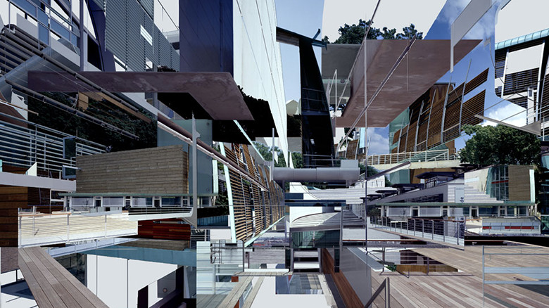

digital

FELD
http://www.feld.is/projects/local-distance/-どんな人
ベルリンのデザイナーたちで構成されたデザインスタジオです。
-解説
画像認識技術を使ったコラージュ作品です。建築写真のアーカイブを元に、別々の写真を、遠近感や消失点などの共通するものを基準にコラージュしています。実際の遠近感にのっとりながら、不思議な風景の写真を作り出しています。
-好きなところ
こういったコラージュ自体は珍しくないですが、画像認識を利用して作っているところは面白いと思いました。